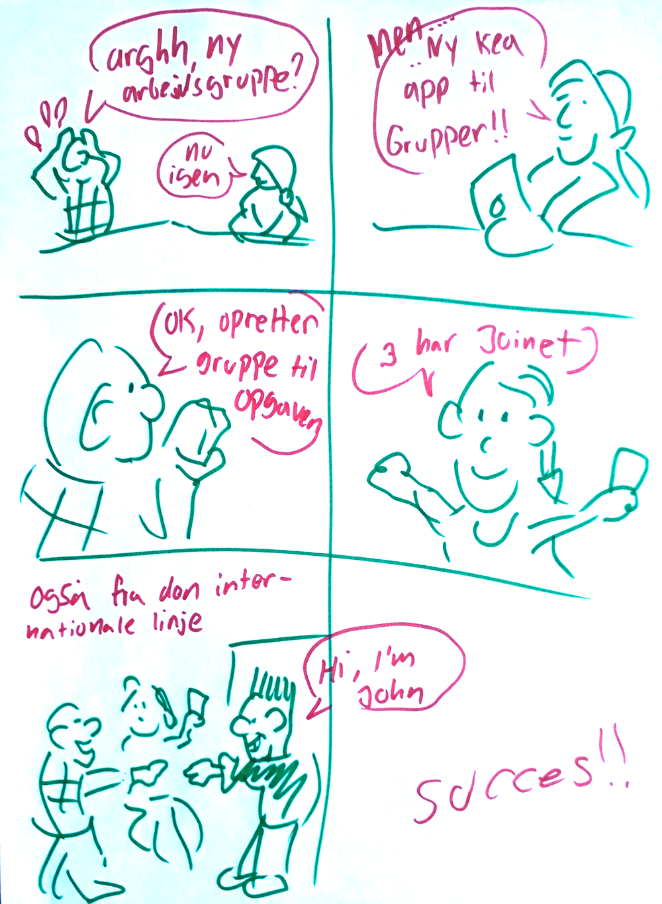
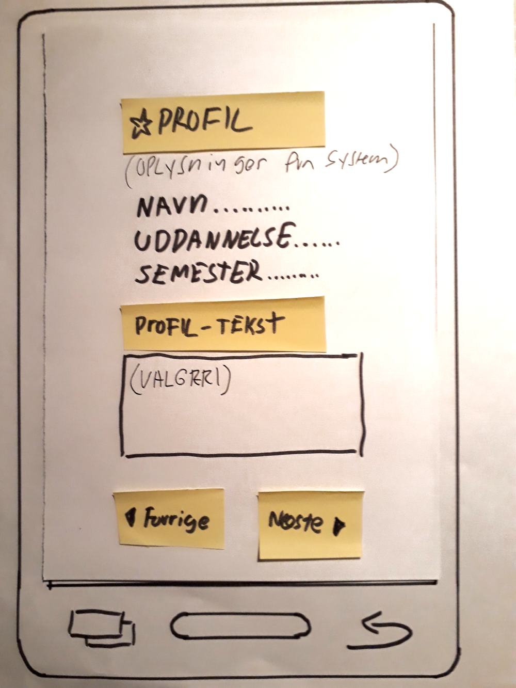
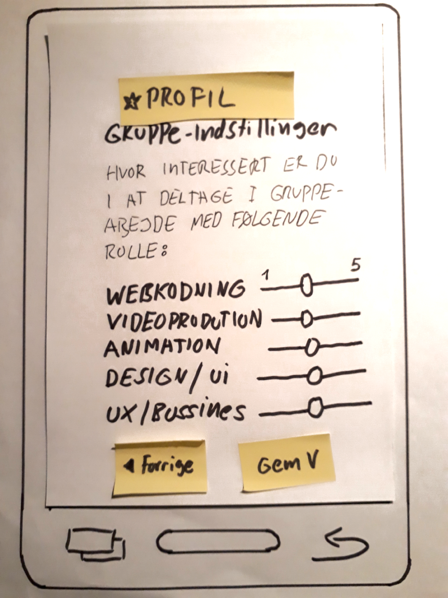

Kea-app
Oversigt:
- Link til GitHub-repository
- Brugerresearch
- Experience map
- Problemformulering
- Persona
- Storyboard
- Features og funktionaliteter
- Dokumentation af Design Charette
- Prototype
- XD prototype
- Test af prototype
- Præsentation af XD-prototype
Opgavebeskrivelse:
Målet med opgaven er at fremstille en prototype på en KEA-app, som kan øge samarbejdet og det sociale fællesskab mellem de danske og internationale multimediedesignstuderende, samt evt. at forbedre jobmulighederne efter endt uddannelse.
Derudover skal den være udstyret med én eller flere funktioner, som kan gøre dagligdagen lettere, eller have features, som kan gøre en forskel for de studerende.
Til at researche og udvikle prototypen, vil jeg anvende Design Thinking's 7 faser til at opdele projektet i mere håndtérbare bidder, og til at hoppe frem og tilbage imellem disse områder, når det giver mening for udformningen, eller hvis nye idéer/informationer giver anledning til en anderledes implementering af design eller funktionalitet.
Link til GitHub-repository
https://github.com/erik8036granberg/04_ux-projektCommit & push med jævne mellemrum, for at holde repository opdateret.
Brugerresearch
Til at samle data og indsigter fra målgruppen (som rammes forholdsvist nøjagtigt, da vi som studerende selv indgår som “kunde” for app-prototypen) har multimediedesignholdet udfyldt et spørgeskema. Overordnet set, får man på denne måde demografisk data, IT- og smartphone-vaner, hvad de synes om KEA/uddannelsen, samt den nuværende relation til de internationale studerende.
Dette er gjort via Google Forms + Google Sheets som output. Herefter kan man studere/udtrække relevante oplysninger, eller visualisere resultatet ved brug af grafer.

Empathize emner
Behov:
- Samarbejde - fx dele grupper/projekter på tværs af holdene?
- Netværk - Udvide netværk på tværs af nationaliteter?
- Kreativitet/sprog - Flere nye ideer og kreative hoveder. Man har muligheden for at forbedre sin engelsk?
- Sprog - Træning i at arbejde, evt. med udfordringer som sprog-barrierer?
Handlinger/føleleser:
- Møder ikke rigtig de internationale studerende (mangel på kontakt)
- Møder kun de internationale studerende til fredagsbar (ikke faglig kontakt)
- Savner et chat forum for kea studerende, hvor man let kan dele filer og lave grupper m.m. (kontakt/hjælp/organisering)
- Mangler app til skema. Et ordenligt forum til overblik over opgaver og lektier (mangler overblik)
Spørgeguide:
- Syndes du, at det er svært, når der skal dannes grupper til skoleopgaver?
- Ville en app til at danne grupper med være en god idé?
- Tror du på, at en app med gruppedannelse på tværs af sproglinjer vil fungere?
- Kommentarer?
Experience map
Post-its lavet på baggrund af spørgeskema, og opdelt efter retning på app-idé eller mere generel forbedring af studiemiljøet/skolen:


Arbejdscitater:
Problemformulering
Primært: Gruppedannelse - også på tværs af sproglinjer.
Der kan nogle gange være en udfordring at danne grupper - blot i en almindelige klasse - og det er meget få, som bare kaster sig ud i det med de udenlandske studerende - om det så drejer sig om en fast skoleopgave, et lektiesamarbejde, arrangement, m.m.
Evt. sekundært: Forum for studerende og tilgang til sit skema i mobilform.
Der kan ofte være behov for svar på spørgsmål om igangværende opgaver, praktiske problemer/uklarheder, eller et skema, som ikke kan ses ordenligt på mobilen.
Problemet er bl.a. (pains)
- Svært at danne de rigtige grupper ift. variation (folk vælger ofte de samme personer) og/eller kompetencer.
- Manglende kontakt til de udenlandske studerende.
- Manglende struktur/organisering.
Ønsket er (goals):
- Få en god, organiseret arbejdsgang
- Få velfungerende grupper
- Blive bedre til engelsk, og udvidde sin kulturelle horisont
Udviklingsmål:
Problemet vil være løst, når man bevæger sig bort fra en "smal" gruppedannelse/organisering, til en "bred", med mange indput, som stadig har en fornuftig, faglig sammensætning?
Løsning: Udvikle en app, hvor man danne arbejdsgrupper mellem KEAs uddannelseshold (fx A og B), de internationale sprøglinjer, eller andre, hvis det giver mening?
Jeg tænker, at man skal kunne oprette en gruppe, og forespørge de tilgængelige elever om deltagelse i gruppen, efter nogle valgte parametre - også evt. også til noget "ikke-opgave-baseret", fx samarbejde om lektier, eller lignende.
Som ekstra features kan være chatforum, skemavisning, eller andre tool, som kan tilføjes senere.
Persona

Persona er baseret på resultaterne fra det fælles spørgeskema, hvor især graferne hurtig viser topscorerne i hver kategori, og giver en fornuftig "gennemsnits-type". Et godt kendskab til sine medstuderende som "gruppe", gør naturligvis også at man kan foretage et kvalificeret gæt, hvis mere personlige attributter skal med i persona-fortællingen.
Storyboard

Features og funktionaliteter
Phone features:
- Fuld skærm
- Push beskeder
- Tastatur
Brugersituationer:
- Oprette/redigere/slette profil
- Oprette gruppe
- Joine gruppe
- Søge efter deltagere, som vil joine egen gruppe
- Slette gruppe
Brugerkontekst:
- Slå noget op/find noget: Bruges som regel i klassen/skolen, når der er udelt et projet, som kræver gruppearbejde.
- Rediger/opret: Når grupper skal passes/organiseres
Jeg ville bruge det, hvis der hurtigt skal laves nogle grupper, eller hvis de skal være mere blandede end normalt - fx med de udenlandske studerende, på det planlkagt forløb
Android / iphone:
Kan produceres som webapp, hvor visningen bliver ens.AOF Aktiviteter:
- Oprette/redigere/slette profil
- Oprette gruppe
- Joine gruppe
- Søge efter deltagere, som vil joine egen gruppe
- Slette gruppe
AOF Objekter:
- Gruppe-"kasser"
- Knapper/ikoner
AOF Features/funktionaliteter:
- Home
- Grupper
- - - Opret gruppe
- - - - - Skriv gruppenavn
- - - - - Vælg katagori
- - - - - Skriv gruppebeskrivelse
- - - Mine grupper
- - - Rediger/slet gruppe
- Profil
- - - Opret profil
- - - - - Skriv brugenavn
- - - - - Skriv kea-mail
- - - - - Skriv adgangskode
- - - - - Gentag adgangskode
- - - - - Vælg foretrukne opgavetyper med rating 1-5
- - - Rediger/slet profil
Dokumentation af Design Charette
Første udkast (delvist forkastet) - Painpoint: Problem med opgave (forum-idé)

Andet udkast - Painpoint: Gruppedannelse til projekt/opgave
Prototype
Startskærm - klik på "Opret profil"-knappen (lidt nede)

Profilside - Klik på "Næste"-knappen

Profilside del 2 - klik på "Næste"-knappen igen
Profilside del 3 klik på "Gem"-knappen for at afslutte profilen
Tilbage til startskærm - klik på "grupper"-ikonet (nedest på siden)
Gruppe-side